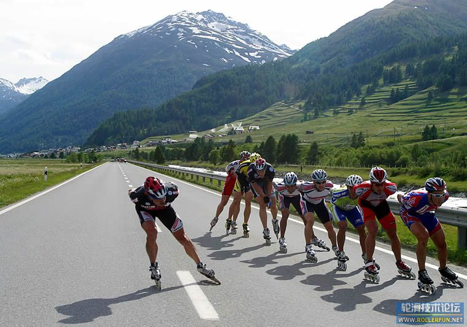
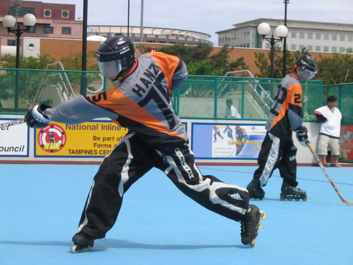
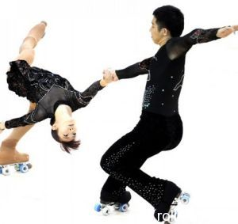
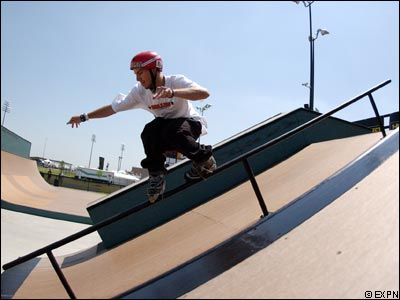

| 轮滑简介 | 主要分类介绍 | 入门教学 | 轮滑美图 | 社会评价 |
|---|
轮滑是一项休闲运动，但同时也是竞技项目，随着它的不断完善，已形成多项轮滑竞技项目，奥运会已出现轮滑的身影了。
1．速度轮滑：以单排、双排轮滑鞋为比赛工具的竞赛项目，具体项目有：场地赛和公路赛

2．轮滑球：看上去像是冰球和曲棍球的结合体，双方各出5人在44×22米的场地上进行比赛，规则类似冰球，但不允许身体冲撞或阻挡，一场比赛为2－3节，每节15－20分钟，进球多者为胜方。

3．花样轮滑：分为单人、双人轮滑舞和圆形轮滑舞（规定动作）。根据动作的难易程度、舞姿的优美程度打分确定胜方。

3．花样轮滑：分为单人、双人轮滑舞和圆形轮滑舞（规定动作）。根据动作的难易程度、舞姿的优美程度打分确定胜方。
